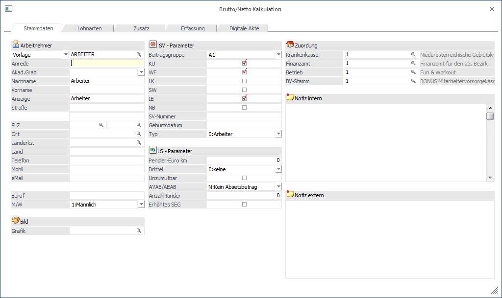
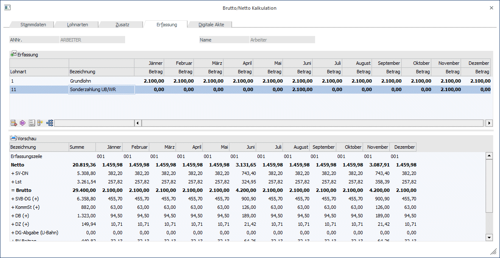
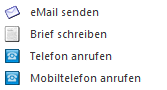

Die Brutto/Netto Kalkulation, die über den Menüpunkt
1 Stammdaten
1 Arbeitnehmer
1 Kalkulation
1 Brutto/Netto Kalkulation
aufgerufen werden kann, ermöglicht auf der einen Seite eine umfangreiche Lohn.- und Gehaltskalkulation, kann aber auf der anderen Seite auch als Bewerbermanagement verwendet werden.
Die Brutto/Netto Kalkulation ist in fünf Register unterteilt.
ü Stammdaten
Anzeige und
Erfassung der Arbeitnehmer/Bewerber Stammdaten
ü Lohnarten
Anzeige und Erfassung
der automatischen Lohnarten
ü Zusatz
Anzeige und Erfassung
der Zusatzfelder und Eigenschaften
ü Erfassung
In diesem Register
wird die Kalkulation durchgeführt
ü Digitale Akte
Anzeige
sämtlicher Archivdokumente des Arbeitnehmers oder Bewerbers
Register Stammdaten
In den Stammdaten können die Basisinformationen eingegeben werden, die in weiterer Folge für die Kalkulation verwendet werden. Im ersten Schritt muss unterschieden werden, ob nun eine Vorlage, oder ein bereits bestehender Arbeitnehmer bearbeitet werden soll. Abhängig von dieser Einstellung kann im Feld
Ø Nummer
dann mit der Matchcode-Funktion nach einer Vorlage oder nach einem AN gesucht werden.

Die weiteren Eingabefelder:
Ø Anrede
Wenn eine neue Vorlage angelegt wird, wird in diesem Feld der Text "NEUEINGABE - F9 für Übernahme" angezeigt. Wird die F9-Taste gedrückt, können die Daten von einer bestehenden Vorlage übernommen werden. Diese Funktionalität ist aber nur bei einer Neuanlage einer Vorlage gegeben. Anhand der Anrede (Herr oder Hr. bzw. Frau oder Fr. - es ist darauf zu achten, dass die richtige Schreibweise - wie angeführt - verwendet wird.) wird auch gleich das Feld "Geschlecht" automatisch vorbesetzt.
Ø Akad.Grad
Aus der Auswahllistbox kann der akademische Grad des AN gewählt werden. Diese Information wird für die elektronische Meldung an die GKK benötigt - daher wird hier immer nur der höchste akademische Grad des AN hinterlegt.
Ø Nachname
Ø Vorname
Ø Anzeige
Dieses Feld wird bei der Erstanlage einen AN aus den Inhalten der Felder "Akad.Grad", "Vorname" und "Nachname" zusammengesetzt. Dies ist aber nur ein Vorschlag und das Feld kann jederzeit editiert werden. Dieses Feld wird z.B. auch für den Andruck am Abrechnungsbeleg oder verwendet.
Ø Straße/Straße2
Ø PLZ/PLZ2
Durch Drücken der F9-Taste kann nach allen angelegten Postleitzahlen gesucht werden.
Wenn die Postleitzahl oder der Ort bereits bekannt ist, kann diese im ersten Feld eingetragen werden. Wird danach die F9-Taste gedrückt, werden (sofern die PLZ bereits angelegt und gefunden wurde) die Felder "PLZ", "Ort", "Länderkennzeichen" und "Land" vom Matchcode beschickt.
Diese Suche kann auch in den Feldern
Ø Ort
und
Ø Länderkz.
durchgeführt werden.
Wird im Feld "Länderkz." ein Ländercode eingetragen, der auch im Länderstamm angelegt ist, wird im Feld
Ø Land
der entsprechende Eintrag übernommen.
Ø Telefon
Ø Mobil
Ø eMail
Wird eine eMail-Adresse hinterlegt, dann kann es so eingerichtet werden, dass die Abrechnungsbelege automatisch an den jeweiligen AN versendet werden.
Ø Beruf
In diesem Feld kann der Beruf, den der AN im Betrieb ausführt, hinterlegt werden. Diese Information hat reinen Informationscharakter.
Ø M/W
Aus der Auswahllistbox kann das Geschlecht des AN ausgewählt werden. Wurde im Feld Anrede die Bezeichnung Herr, Hr. bzw. Frau oder Fr. eingegeben, wird das Geschlecht vom Programm automatisch vorbesetzt.
Ø Grafik
Sofern vorhanden, kann in diesem Feld eine Grafikdatei, die z.B. den AN zeigt, hinterlegt werden. Durch Drücken der F9-Taste kann nach allen Grafikdateien, die die WinLine unterstützt, gesucht werden, wobei hier sowohl Grafiken verwendet werden können, die in der WinLine-Datenbank gespeichert sind, als auch Grafiken, die sich irgendwo auf einer Festplatte befinden.
Ø Beitragsgruppe
Aus der Auswahllistbox kann die Beitragsgruppe gewählt werden, unter der der AN abgerechnet werden soll. Besteht für den AN keine SV-Pflicht, kann dies ebenfalls hinterlegt werden. Wenn die Beitragsgruppe bestätigt wird, wird für die Nebenbeträge (das sind die nächsten 6 Optionen) nach den Standardeinstellungen vorbesetzt. Zusätzlich dazu werden Abhängigkeiten, die von der Beitragsgruppe ausgehen, gleich mit vorbesetzt.
Über die Checkboxen
Ø KU (Kammerumlage)
Ø WF (Wohnbauförderung)
Ø LK (Landarbeiterkammerumlage)
Ø SW (Schlechtwettergeld)
Ø IE (Insolvenzentgelt)
Ø NB (Nachtschichtbesch. Gesetz)
kann gesteuert werden, welche Nebenbeträge für den AN abzuführen sind. Die Standardeinstellung wird aus der Beitragsgruppe übernommen. Eine individuelle Einstellung kann aber trotzdem vorgenommen werden.
Ø SV-Nummer:
Eingabe der SV-Nummer. Diese Eingabe wird auf ihre Richtigkeit geprüft. Ist keine SV-Nummer bekannt, kann das Feld leer gelassen werden.
Ø Geburtsdatum:
Hier wird das (richtige) Geburtsdatum des AN eingetragen, wobei das Datum anhand der zuvor eingetragenen SV-Nummer vorgeschlagen wird.
Hinweis:
Ist in der SV-Nummer ein Geburtsdatum enthalten, das kein gültiges Datum ergibt (z.B. 011377) so muss im Geburtsdatum ein Gültiges eingegeben werden, sonst kann die Prüfung auf das Alter des AN nicht durchgeführt werden.
Ø Pendler-Euro km
Hier kann hinterlegt werden wie viele Kilometer zur Berechnung des Pendlereuros herangezogen werden sollen (Entspricht der Kilometerangabe am Antragsformular)
Ø Drittel
Hier kann hinterlegt werden zu welchem Anteil die Pendlerpauschale berücksichtigt werden soll
Ø Unzumutbar
Diese Checkbox ist zu aktivieren, wenn das große Pendlerpauschale berücksichtigt werden soll.
Ø AVAB/AEAB
Aus der Auswahllistbox kann gewählt werden, welcher Absetzbetrag in Anspruch genommen werden kann. Folgende Eingaben sind möglich:
N Es wird weder der Alleinverdiener- noch der Alleinerzieherabsetzbetrag in Anspruch genommen.
J Der Alleinverdienerabsetzbetrag wird bei der Lohnsteuerberechnung berücksichtigt.
E Der Alleinerzieherabsetzbetrag wird bei der Lohnsteuerberechnung berücksichtigt.
Ø Anzahl Kinder
Dieses Feld kann bearbeitet werden, wenn im Feld AVAB/AEAB die Option AVAB oder AEAB ausgewählt wurde, wobei hier die Anzahl der Kinder des AN hinterlegt wird. Wird die Option "AVAB" oder "AEAB" gewählt, dann muss die Anzahl der Kinder zumindest 1 sein (Ausnahme: es handelt sich um einen Pensionisten, dann darf auch bei AVAB die Anzahl der Kinder auf 0 stehen).
Ø Erhöhtes SEG
Durch Aktivieren dieser Checkbox kann der erhöhte SEG-Zuschlag von € 540,-- in Anspruch genommen werden. Bleibt die Checkbox inaktiv, kann nur der normale SEG-Zuschlag von € 360,-- in Anspruch genommen werden.
Ø Krankenkasse
In diesem Feld wird die Krankenkasse eingetragen, bei der die SV-Abgaben für diesen AN gemacht werden müssen. Das hängt im Wesentlichen davon ab, an welcher Betriebsstätte (sofern es mehrere gibt) der AN beschäftigt ist. Nach der Eingabe der Krankenkassennummer wird daneben die zuständige Krankenkasse aus den Betriebsdaten angezeigt (sofern in den Betriebsdaten ein entsprechender Empfänger angelegt wurde).
Durch Drücken der F9-Taste kann nach allen bereits angelegten Betriebsstätten gesucht werden. Wird ein Betrieb ausgewählt, bei dem das Inaktiv-Kennzeichen gesetzt ist, wird eine entsprechende Meldung ausgegeben.
Ø Finanzamt
Eingabe des Finanzamtes. Wenn die Finanzamtsnummer eingetragen und bestätigt wurde, wird unter dem Eingabefeld der Name des Finanzamts angezeigt. Das Finanzamt wird für die Berechnung des DB/DZ-Prozentsatzes verwendet
Ø Betrieb
Eingabe einer Betriebsnummer, zu der der Arbeitnehmer zugeordnet wird.
Ø BV-Stamm:
Hier kann der BV-Stamm ausgewählt werden, an den die BV-Beiträge abgeführt werden sollen. Auf Basis dieser Einstellung wird der BV-Prozentsatz ermittelt.
Register Lohnarten
Im Register Lohnarten können die Basis - Lohnarten und die Konstanten eingetragen werden, anhand derer die Kalkulation durchgeführt werden soll. Diese Lohnarten / Konstanten können in weiterer Folge im Register Erfassung noch ergänzt werden. Das Fenster ist in zwei Bereiche unterteilt:
Lohnarten
In dieser Tabelle können die Basis-Lohnarten hinterlegt werden. Dabei stehen folgende Eingabefelder zur Verfügung:
Ø Lohnart
Hier wird die Lohnartennummer eingetragen. Durch Drücken der F9-Taste kann nach allen bereits angelegten Lohnarten gesucht werden.
Ø Bezeichnung
In diesem Feld wird die Lohnartenbezeichnung angezeigt. Dieses Feld kann nicht verändert werden.
Ø Monat von
Aus der Auswahllistbox kann das Monat gewählt werden, ab dem diese Lohnart ihre Gültigkeit hat (z.B. wenn ein Sachbezug erst ab Mai gezahlt wird).
Ø Jahr von
Hier wird das Jahr eingetragen, in dem die Lohnart gültig ist. Standardmäßig wird immer 0 vorgeschlagen. Das bedeutet, dass die Lohnart immer verwendet wird. Soll die Lohnart nur beschränkt verwendet werden, kann hier die Jahreszahl eingetragen werden.
Ø Monat bis
Aus der Auswahllistbox kann das Monat gewählt werden, bis zu dem diese Lohnart ihre Gültigkeit hat (z.B. wenn ein Bezug nur bis August bezahlt wird).
Ø Jahr bis
Hier wird das Jahr eingetragen, in dem die Lohnart gültig ist. Standardmäßig wird immer 0 vorgeschlagen. Das bedeutet, dass die Lohnart immer verwendet wird. Soll die Lohnart nur beschränkt verwendet werden, kann hier die Jahreszahl eingetragen werden.
Ø
Durch Anklicken des Entfernen-Buttons wird die gerade aktive Lohnart gelöscht.
Beispiele für die Hinterlegung von Lohnarten:
Ø Grundbezüge
Bei Standardbezügen wie Gehalt oder Stundenlohn, die das ganze Jahr über Gültigkeit haben, wird bei von/bis 01 bis 12 hinterlegt.
Ø Sonderzahlungen
Sonderzahlungen werden nur 2 Mal im Jahr bezahlt. Daher wird einmal die Gültigkeit 05 bis 05 und einmal die Gültigkeit 11 bis 11 eingetragen - d.h. es kann auch vorkommen, dass eine Lohnart öfters eingetragen wird.
Konstanten
In dieser Tabelle können Konstanten verwalten werden, die für die automatische Berechnung von Lohnarten verwendet werden können. Dies kann z.B. der monatliche Grundbezug, ein Sachbezug oder dergleichen sein. Die aktuell gültigen Konstanten werden fett dargestellt, sodass man sie leichter erkennen kann.
Ø Konstante
Hier wird die Konstantennummer eingetragen. Durch Drücken der F9-Taste kann nach allen angelegten Konstanten gesucht werden. Eine Konstante kann auch öfters vergeben werden (um z.B. unterjährige Bezugserhöhungen abzubilden).
Ø Bezeichnung
Hier wird die Bezeichnung der Konstante angezeigt.
Ø Wert
In diesem Feld wird der Betrag eingegeben, mit der die Konstante abgerechnet werden soll, wobei der Wert bis zu 4 Nachkommastellen haben kann. Abhängig von der Formel, die mit dieser Konstante rechnet, wird dieser Wert weiterbehandelt.
Ø Monat von
Aus der Auswahllistbox kann das Monat gewählt werden, ab dem diese Konstante ihre Gültigkeit hat (z.B. wenn eine Bezugserhöhung erst ab Mai gilt wird).
Ø Jahr von
Hier wird das Jahr eingetragen, in dem die Konstante gültig ist. Standardmäßig wird immer 0 vorgeschlagen. Das bedeutet, dass die Konstante immer verwendet wird. Soll die Konstante nur beschränkt verwendet werden, kann hier die Jahreszahl eingetragen werden.
Ø Monat bis
Aus der Auswahllistbox kann das Monat gewählt werden, bis zu dem diese Konstante ihre Gültigkeit hat (z.B. wenn ein Bezug nur bis August bezahlt wird).
Ø Jahr bis
Hier wird das Jahr eingetragen, in dem die Konstante gültig ist. Standardmäßig wird immer 0 vorgeschlagen. Das bedeutet, dass die Konstante immer verwendet wird. Soll die Konstante nur beschränkt verwendet werden, kann hier die Jahreszahl eingetragen werden.
Ø
Durch Anklicken des Entfernen-Buttons wird die gerade aktive Konstante mit allen ihren Werten gelöscht.
Hinweis
Es kann auch vorkommen, dass eine Konstante öfters eingetragen wird, z.B. wenn ein Bezug bis März 3.000,- und ab April dann 3.500,- beträgt.
Register Zusatz
Pro Vorlage/AN können bis zu 30 Zusatzfelder verwaltet werden. Zusätzlich werden hier die Eigenschaften einer Vorlage/eines Arbeitnehmers (Einstufung, Familienstand etc.) hinterlegt.
Register Erfassung
In der ersten Tabelle können die Lohnarten eingetragen werden. Wurden bei den Stammdaten automatische Lohnarten hinterlegt, werden diese beim Wechsel in die Erfassung der Abrechnungswerte automatisch geladen, sofern der Button Zeilenformel im oberen Bereiches des Fenster aktiviert ist.
Achtung:
Hier muss darauf geachtet werden, welche Formel in der Lohnart hinterlegt ist. Ggf. muss dann für jeden Monat eine Eingabe durchgeführt werden (wenn z.B. in der Lohnart die Stundeneingabe gefordert wird).
Für jede Abrechnungsperiode stehen wahlweise eine (Betrag) oder drei (Stunden, Satz, Betrag) Spalten für die Erfassung zur Verfügung. Diese Ansicht kann mit dem Button bzw. mit der Tastenkombination ALT + S gewechselt werden. Wird in eines der Betragsfelder manuell ein Wert eingetragen, kann dieser mit ALT-W () in die Spalten der nachfolgenden Perioden übernommen werden. Bei jeder Änderung eines Betrages wird automatisch die Belegformel ausgeführt. Soll für die aktuelle Periodenspalte die Zeilenformel aufgerufen werden, drück man ALT-O ().Sollen die erfassten Lohnarten verworfen und die automatischen neu geladen werden, kann dies mit dem Button "Auto. LA" erreicht werden. Mit dem Entfernen Button oder der Tastenkombination ALT-E kann eine Lohnart aus der Erfassung entfernt werden.

Drückt man auf einer Betragsspalte die rechte Maustaste, kann eine von den erfassten Konstanten gewählt werden. Für diese wird der Wert dann, mit gültig ab der Periode, in den Konstanten eingetragen. Eine Lohnart kann mit einem Klick auf die Lohnartennummer oder -bezeichnung, zu den automatischen Lohnarten hinzugefügt werden. Diese wird für alle Perioden eingetragen, die in den Periodenspalten Werte eingetragen haben. So kann z.B. die Lohnart für Urlaubs- und Weihnachtsgeld automatisch für die Perioden 6 und 11 hinterlegt werden, wenn nur in diesem Perioden Werte eingetragen sind. Sollte die automatische Lohnart bereits eingetragen sein, wird sie zuvor gelöscht, sodass es nicht zu mehrfach Definitionen kommen kann.
In der zweiten Tabelle werden, sofern der Button Rechnen aktiv ist, die Abrechnungswerte dargestellt. In der ersten Spalte steht die Bezeichnung, dann die Summe über alle Perioden und die einzelnen Perioden. Wie in der Einzelabrechnung ist es auch hier möglich auf Basis eines gewünschten Nettobetrages den Bruttobezug zu ermitteln. Dazu wird in der ersten Zeile die Erfassungszeile selektiert, dessen Bruttobezug geändert werden soll. In der Zeile "Netto" wird für die entsprechende Periode der gewünschte Nettobetrag eingetragen. Mit der Bestätigung des Betrages wird versucht einen entsprechenden Bruttobezug zu ermitteln. In den übrigen Zeilen werden, wie in der Arbeitnehmer Kosten Auswertung, vom Netto über Brutto bis zur Gesamtsumme die Arbeitgeberkosten angeführt. Bei den Werten für SVDG, KommSt, DB und DZ (die Bezeichnungen sind hinten mit einem + versehen) können durch einen Doppelklick auf die Bezeichnung die Werte zusätzlich in NZ und SZ aufgegliedert werden.
Buttons
Ø OK
Damit können die Einstellungen für Vorlagen gespeichert werden. Dabei werden nur die "Stammdaten", nicht aber die Erfassung gespeichert. Wenn die Lohnarten allerdings in die Automatischen Lohnarten übernommen wurden und auch die entsprechenden Konstanten, werden diese beim nächsten Mal auch wieder geladen und entsprechend berechnet.
Ø Ende
Durch Drücken des Buttons "Ende" bzw. der Taste ESC wird der Programmbereich geschlossen und vorgenommene Einstellungen verworfen.
Ø Löschen Button
Mit diesem Button kann eine Vorlage gelöscht werden.
Ø In Arbeitnehmer umwandeln
Um die Vorlage in einen Arbeitnehmer zu verwandeln, kann dieser Button angeklickt werden. Dabei wird der Arbeitnehmerstamm geöffnet und alle Werte, Lohnarten, Konstanten, Zusatzfelder, Eigenschaften und die digitale Akte werden in den Arbeitnehmerstamm übernommen. Es muss nur noch eine neue Arbeitnehmernummer eingetragen und der Arbeitnehmer gespeichert werden. Wenn der AN gespeichert wurde, erfolgt noch die Abfrage, ob die verwendete Vorlage gelöscht werden soll oder nicht.
Ø Zeilenformeln
Ist der Button aktiv, werden sämtliche Zeilenformeln der Lohnarten ausgeführt.
Ø Rechnen
Da die Berechnung der Abrechnungswerte für alle Perioden Zeit in Anspruch nimmt und es auch nicht immer sinnvoll ist, bei jeder Änderung sofort neu zu berechnen, kann die Berechnung der Abrechnungswerte über den "Rechnen" Button ein- und ausgeschaltet werden.
Ø Lohnkonto
Durch Anklicken des Buttons Lohnkonto kann bei aktiver Berechnung ein fiktives Lohnkonto ausgegeben werden
Ø Lohnzettel
Bei aktiver Berechnung (Button Rechnen muss aktiv sein) kann ein fiktiver Lohnzettel ausgegeben werden. Für den Lohnzettel gibt es ein eigenes Formular (P03W20K), das für die fiktiven Abrechnungen auch entsprechend angepasst werden kann.
Ø Vorschau auf Drucker ausgeben
Bei aktiver Berechnung (Button Rechnen muss aktiviert sein) kann die Vorschau der Berechnung auch ausgedruckt werden, wobei neben den Werten aus der Vorschau auch Name und Adresse der Kalkulation sowie die Erfassungszeilen mitgedruckt werden.
Ø Aktionen
Durch Anklicken des Buttons "Aktionen" wird ein Kontextmenü geöffnet, in dem verschiedene Aktionen zur Verfügung stehen, die für die selektierten Einträge ausgeführt werden können:

Um eine Aktion auszuführen, muss die gewünschte Aktion angewählt werden.
Die standardmäßig zur Verfügung stehenden Aktionen, haben folgende Funktionen:
ü EMail senden
Wenn beim
Datensatz eine E-Mail-Adresse hinterlegt ist, öffnet sich das Postausgangsbuch
zum Erstellen und Versenden von E-Mails. Die Daten, die als Basis für das
Versender der Mails dienen, werden in einer temporären Kampagne gespeichert.
ü Brief schreiben
Es wird das
Postausgangsbuch geöffnet, in dem ein Serienbrief ausgegeben werden kann. Hier
kann allerdings nur mehr der Textbaustein für die Ausgabe hinterlegt werden, die
Daten werden aus einer temporären Kampagne übernommen
ü Telefon anrufen
Wird diese
Aktion gewählt, und ist beim entsprechenden Datensatz auch eine Telefonnummer
eingetragen, wird - sofern die entsprechenden Voraussetzungen vorhanden sind -
die Telefonnummer 1 gewählt.
ü Mobiltelefon anrufen
Wird diese
Aktion gewählt, und ist beim entsprechenden Datensatz auch eine
Mobiltelefonnummer eingetragen, wird - sofern die entsprechenden Voraussetzungen
vorhanden sind - die Mobiltelefonnummer gewählt.
Ø MESO Connect
Wenn dieser Button angeklickt wird, öffne sich eine Auswahllistbox, aus der dann eine Aktion ausgewählt werden kann. Diese Aktionen beinhalten Schnittstellen zu Office-Programmen, wo dann z.B. automatisch ein Mail verschickt oder ein Brief geschrieben werden kann. Durch Anklicken der Option "Wizard" können auch neue Aktionen erstellt werden. Details dazu entnehmen Sie bitte dem WinLine START-Handbuch.
Ø Adresse in der Map anzeigen
Wenn dieser Button angeklickt wird, wird - sofern eine Internetverbindung vorhanden ist - eine Internetseite geöffnet, in der der Standort des gewählten Arbeitnehmers angezeigt wird.